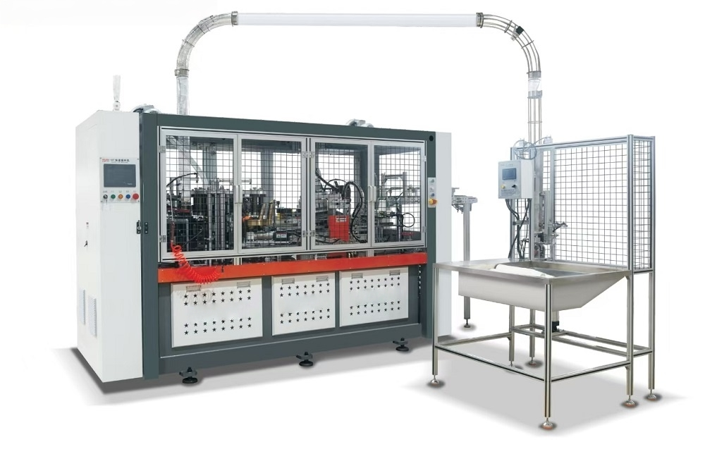

High-speed paper cup machines use high-temperature hot air to precisely blow onto the bonding area, heating it quickly and evenly. Whether it's ordinary paper or environmentally friendly paper, it can be welded very firmly in a very short time. Some high-end machines even use ultrasonic technology for sealing, which is like two pieces of paper being instantly vibrated together. This is highly efficient, provides excellent sealing, and is particularly friendly to environmentally friendly paper materials.

Paper Cup Production Process
The creation of a paper cup can be divided into six main steps, and the entire process is fully automatic and continuous:
1. Cutting the Cup Body
The paper cup machine first precisely cuts a fan-shaped piece of paper from a large roll of paper; this forms the side body of the cup.
2. Curling and Forming
This cut fan-shaped piece of paper is then grasped by a robotic arm and sent to a mold, where it is quickly rolled into a conical shape.
3. Side Sealing
At the overlapping edges of the cup body blank, the machine uses hot air or ultrasonic technology for rapid bonding, forming a sturdy cylindrical shape.
4. Bottom Cutting and Feeding
The High Speed Paper Cup Machine cuts a perfect round cup bottom from a separate roll of special bottom paper in one stroke. Next, the round cup base will be precisely delivered to the bottom of the already rolled cup tube.
5. Bottom Sealing
Once the cup body and bottom are aligned, the machine will heat and pressurize, rolling and tightening the bottom edge of the cup. This ensures that the bottom of the cup is completely sealed, so you no longer have to worry about leaks when drinking.
6. Edge Curling
This is the final step in completing the paper cup. The machine will roll the top edge of the cup outwards and press it firmly. This creates a smooth, rounded, and slightly thicker rim for the cup.
This makes it more comfortable for your lips when you drink. The rolled edge also greatly increases the cup's strength, making it less likely to collapse or deform.
We use cookies to offer you a better browsing experience, analyze site traffic and personalize content. By using this site, you agree to our use of cookies.
Privacy Policy